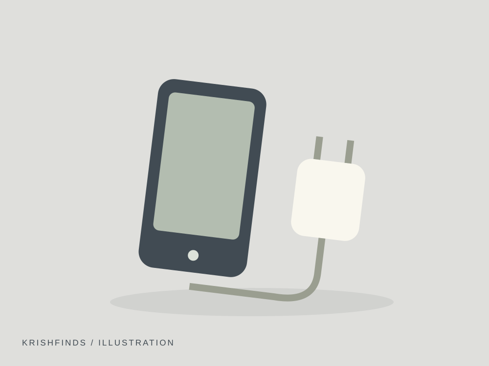
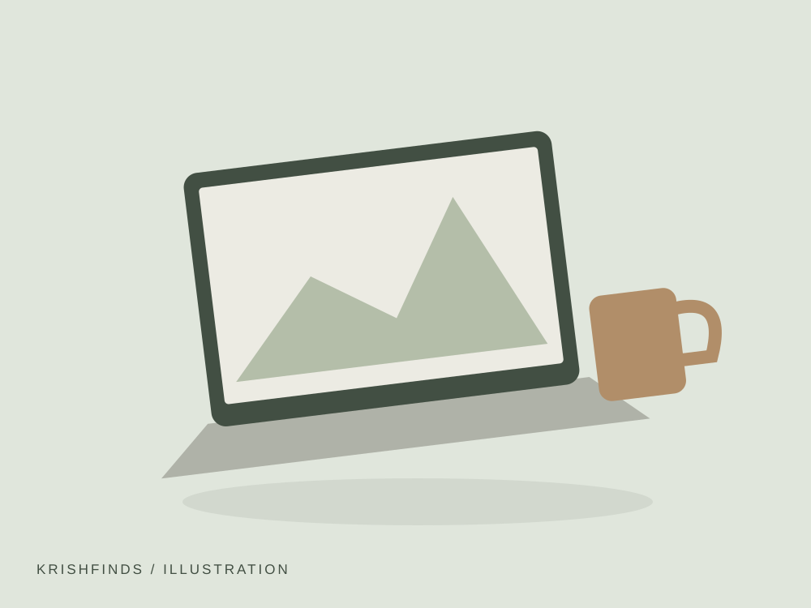
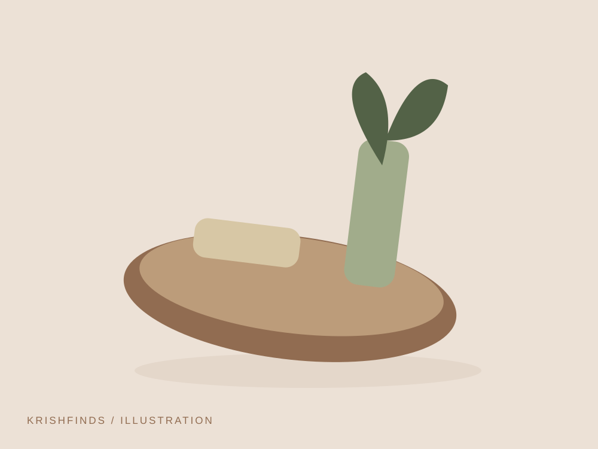

Travel · 8 min read
10 Useful Things for a Weekend Trip
Pack a little lighter. Leave a little more prepared. Ten practical additions for your next two-night escape.
Read guideUseful gear and accessories for weekend trips, holidays and everyday travel.

Pack a little lighter. Leave a little more prepared. Ten practical additions for your next two-night escape.
Read guide ↗Pack a little lighter. Leave a little more prepared. Ten practical additions for your next two-night escape.
Read guideThe everyday pieces that can earn a permanent place in a travel bag.
Read guideSome links on KrishFinds are affiliate links. I may earn a commission if you purchase through them at no additional cost to you.
Explore this collection or choose another topic below.

A backup for long days away from a socket.
Why I picked it Extra charging capacity can be useful when maps and tickets live on your phone.
View on Amazon Affiliate link
Give cables and small essentials a place.
Why I picked it Separate compartments help prevent a hunt through the bottom of your bag.
View on Amazon Affiliate link
One compact charging point for everyday devices.
Why I picked it A compatible multi-port charger can reduce the adapters you carry.
View on Amazon Affiliate link
Bring your screen a little closer to eye level.
Why I picked it An elevated screen can make a separate keyboard and mouse setup more comfortable.
View on Amazon Affiliate link
A secure place for navigation when parked or riding.
Why I picked it A suitable mount keeps navigation visible without holding the phone.
View on Amazon Affiliate link
Keep the basics together when you are away.
Why I picked it A compact pouch makes it easier to remember the tools you already use.
View on Amazon Affiliate link
A refillable bottle that fits your day bag.
Why I picked it Easy access to water is helpful on walks and travel days.
View on Amazon Affiliate link
Separate clean clothes from the rest of your bag.
Why I picked it Small packing cubes make it easier to unpack only what you need.
View on Amazon Affiliate link
A light extra layer for changing weather.
Why I picked it A compact layer may save you from carrying a bulky jacket for a short shower.
View on Amazon Affiliate link
A small addition for noisier nights.
Why I picked it A comfortable pair may help reduce background noise while resting.
View on Amazon Affiliate link
Keep tickets and identification together.
Why I picked it One dedicated place can simplify check-ins and station changes.
View on Amazon Affiliate link
An extra bag that packs down small.
Why I picked it Useful for groceries, laundry or a layer you no longer need to wear.
View on Amazon Affiliate link
A spare cable with the right connectors.
Why I picked it A clearly labelled cable is easier to grab when leaving in a hurry.
View on Amazon Affiliate link
Gather the loose ends around your desk.
Why I picked it Reusable ties are easy to adjust when your setup changes.
View on Amazon Affiliate link
A landing spot for keys and pocket essentials.
Why I picked it A consistent place for daily items can make leaving home simpler.
View on Amazon Affiliate link
A washable cloth for everyday tidying.
Why I picked it A reusable cloth is a simple addition to an existing cleaning routine.
View on Amazon Affiliate link
A separate light for a roadside stop.
Why I picked it A small torch can be useful when your phone needs to stay charged.
View on Amazon Affiliate linkNo recommendations in this category yet.